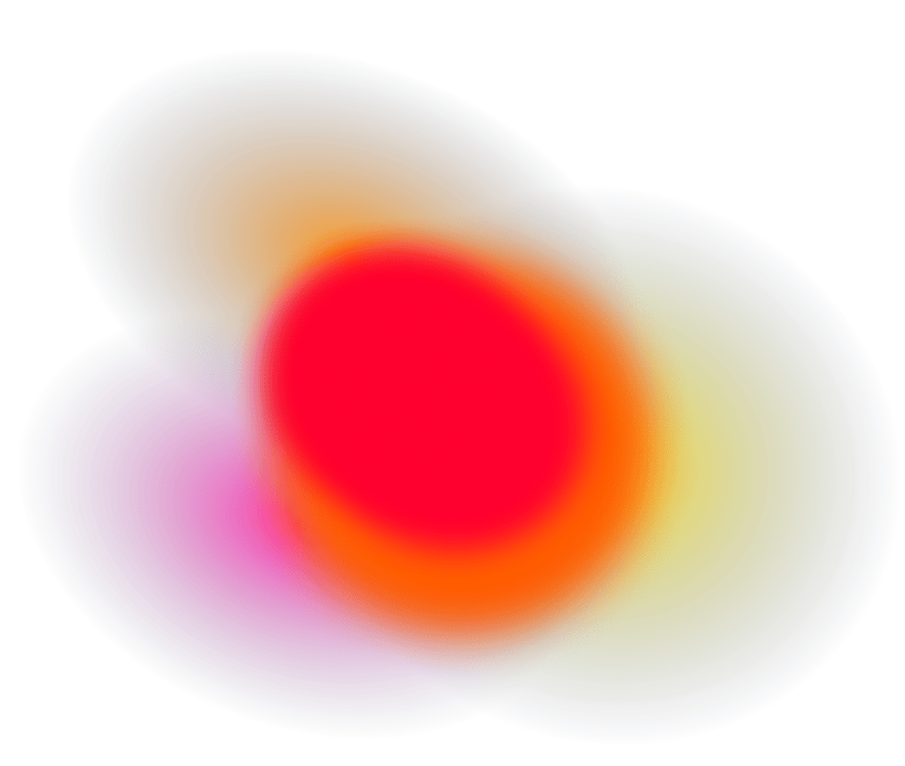

白洞会呼吸。雾里有焦散。把鼠标放上去。

右半是纸，inset 10px，圆角 10。雾从底下穿过去。表单不是盖在英雄图上的一层。
6 个点，半径 330–350，1.2–2s sine.inOut 来回。边是 cardinal。底下焦散从极光图的透明处爬出来。
响的药丸才上色。影子 5→10，0.3s。不要 Google / Apple。原站字是 Louize，这里用笔记自己的衬线。
原页 access.mymind.com/signin。登录态把 blob 时间轴 pause 了，底下焦散 shader 仍在走 uTime。颜色是带透明的 gradient_global.png，不是 JPEG，也不是 mix-blend。颗粒 80px，透明度 0.6，铺在 shader 上、白洞下。
不要抄思考者，不要接真登录。点舞台会给 shader 加 2 秒 timeAdded，跟原站 click 一样。